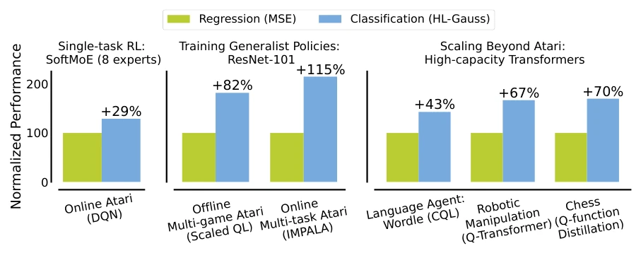
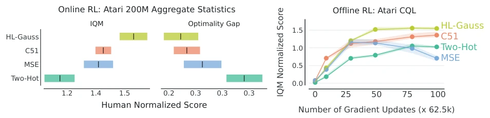
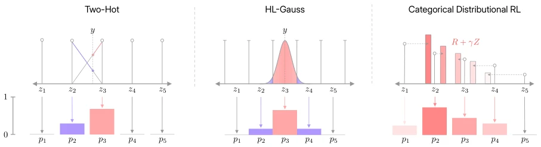
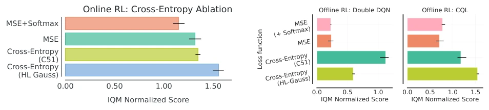
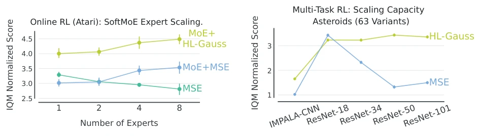
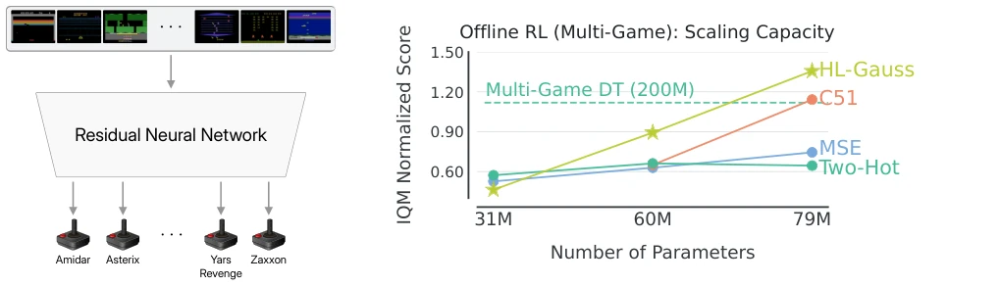
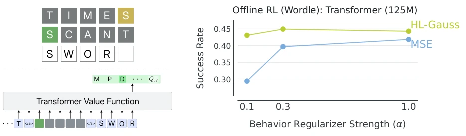
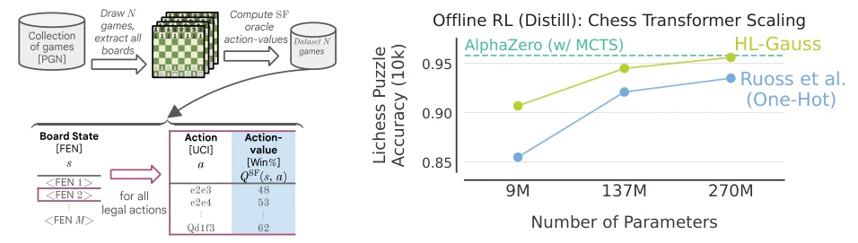
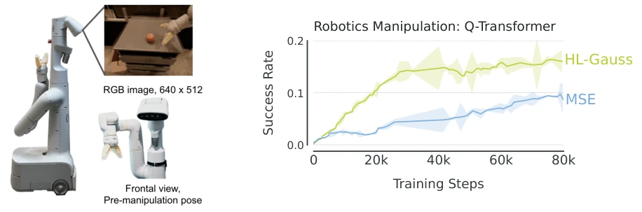
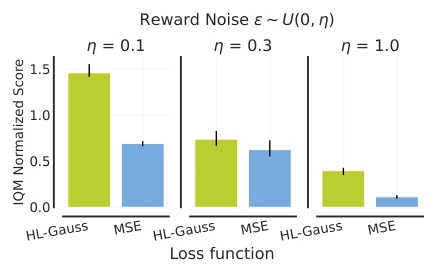

This paper's title is quite imposing, 'Stop Regressing', directly pointing to the core pain point of value function training. The authors found that in supervised learning, classification tasks using cross-entropy loss can be easily scaled to large models like Transformers, but value functions in reinforcement learning still use MSE regression, causing the training performance of large networks to collapse. This is akin to wielding a dragon-slaying sword (Transformer) while only practicing embroidery needle (MSE) skills. Although the method is simple and rough—treating regression as classification—the results are astonishing, with improvements in Atari, robotics, and even chess. However, although this trick is good, it is essentially still a value function, not solving the exploration problem inherent in policy gradients, belonging to a masterful move within 'changing the soup but not the medicine'. For the RL community still stubbornly sticking to MSE, this slap is loud and comes at almost zero cost.
研究动机Motivation
深度强化学习中，基于价值的方法（如 DQN）主要依赖均方误差（MSE）回归来训练值函数。然而，随着网络规模扩大（如 Transformer、MoE），MSE 的扩展性极差，性能往往随参数量增加而下降。相比之下，监督学习通过交叉熵分类损失已实现大规模网络的有效训练。现有工作指出，MSE 在 RL 中面临目标噪声大、非平稳性强等问题（Agarwal et al., 2021; Kumar et al., 2023）。为何 RL 不能像监督学习那样利用分类的稳定性？本文旨在验证将价值函数训练重构为分类问题是否能解决扩展性瓶颈，填补 RL 与监督学习在损失函数设计上的巨大鸿沟。
In deep reinforcement learning, value-based methods (such as DQN) mainly rely on mean squared error (MSE) regression to train value functions. However, as network scale expands (e.g., Transformer, MoE), MSE's scalability is extremely poor, and performance often declines as the number of parameters increases. In contrast, supervised learning has achieved effective training of large-scale networks through cross-entropy classification loss. Existing work points out that MSE faces issues such as high target noise and strong non-stationarity in RL (Agarwal et al., 2021; Kumar et al., 2023). Why can't RL utilize the stability of classification like supervised learning does? This paper aims to verify whether reconstructing value function training as a classification problem can solve the scalability bottleneck, bridging the huge gap between RL and supervised learning in loss function design.

Figure 1 | Performance gains from HL-Gauss cross-entropy loss (§3.1) over MSE regression loss for training value- networks with modern architectures, including MoEs (§4.2.1), ResNets (§4.2), and Transformers (§4.3). The x-axis labels correspond to domain name, with training method in brackets. For multi-task RL results, we report gains with ResNet-101 backbone, the largest network in our experiments. For Chess, we report improvement in performance gap relative to the teacher Stockfish engine, for the 270M transformer. For Wordle, we report results with behavior regularization of 0.1.

Figure 4 | Regression vs cross-entropy losses for (Left) Online RL and (Right) Offline RL (§4.1). HL-Gauss and CDRL outperform MSE, with HL-Gauss performing the best. Moreover, Two-Hot loss underperforms MSE but is more stable with prolonged training in offline RL, akin to other cross-entropy losses. See §4.1 for more details.
The overall process maintains the standard RL framework, with core changes in the value network output layer and loss function. The value network no longer outputs scalar Q-values, but outputs logits, which are converted into a classification distribution via Softmax. The target value (TD Target) is no longer a single scalar, but is mapped to a classification distribution through projection. The authors proposed three projection strategies: Two-Hot (dual-hot encoding), CDRL (Distribution RL), and HL-Gauss. Among them, HL-Gauss performs best; it treats the TD target as the mean of a Gaussian distribution, smoothing the probability mass onto multiple adjacent categories (bins), rather than concentrating it only on two positions. During training, classification cross-entropy loss is used to minimize the KL divergence between the predicted distribution and the target distribution. Experiments prove that using Softmax parameterization alone with MSE is ineffective; it must be paired with cross-entropy loss. HL-Gauss effectively mitigates overfitting and noise sensitivity issues by utilizing the ordinal structure of regression problems. In addition, this method requires no extra computational overhead and can directly replace the loss function in existing code, achieving 'plug-and-play'.

Figure 3 | Visualizing target-value categorical distribution in cross-entropy based TD learning. While Two-Hot (left, §3.1) puts probability mass on exactly two locations, HL-Gauss (middle, §3.1) distributes the probability mass to neighbouring locations (which is akin to smoothing the target value). CDRL (right, §3.2) models the categorical return distribution, distributing probability mass proportionally to neighboring locations.

Figure 12 | Evaluations of the learning stability of MSE+Softmax (§5.1.1) in Offline RL on Atari. We do not observe any substantial gains from using a softmax operator with the MSE loss for either architecture. This implies that the cross-entropy loss is critical.
Experiments cover Atari online/offline, multi-task, Chess distillation, Wordle language agent, and robotics manipulation. Baselines include DQN, CQL, Q-Transformer, etc. Metrics are mainly IQM normalized scores and success rates. Results show that HL-Gauss improves by 30%-115% over MSE on Atari, and demonstrates stronger scalability under ResNet, MoE, and Transformer architectures. Ablation studies show that cross-entropy loss is more critical than Softmax parameterization; HL-Gauss is more robust to noisy rewards and dynamic stochasticity; and it can learn more expressive feature representations (better linear probing performance). This confirms the general advantage of classification loss in RL, especially performing excellently when handling non-stationary targets.

Figure 5 | MoE scaling curves for HL-Gauss and MSE on Online RL. HL-Gauss, with a single expert, outperform all regression configurations. Both HL-Gauss and MSE scale similarly when employing SoftMoE, with HL-Gauss providing ≈30% IQM improvement. SoftMoE also mitigates negative scaling observed with MSE alone. See §4.2.1 for more details.

Figure 7 | Scaling curves on Multi-game Atari (Offline RL). IQM human normalized score for ResNet-{34, 50, 101}, with spatial embeddings, to play 40 Atari games simultaneously using a single value network (Kumar et al., 2023). HL-Gauss enables remarkable scaling, substantially outperforming categorical distributional RL (C51) and regression (MSE) losses used by prior work, as well as the multi-game Decision Transformer (Lee et al., 2022). See §4.2.2 for more details and Figure D.4 for a version of these results reported in terms of DQN normalized scores, another commonly used metric.

Figure 8 | Regression vs cross-entropy loss for Wordle (Offline RL). Comparing HL-Gauss cross-entropy loss with MSE regression loss for a transformer trained with offline RL on Wordle dataset (Snell et al., 2023). Here, we evaluate the success rate of guessing the word in one turn given a partially played Wordle game (e.g., image on left). HL-Gauss leads to substantially higher success rates for varying strengths of behavior regularization. See §4.3.1 for more details.

Figure 9 | Grandmaster-level Chess without Search. (Left) Dataset generation for Q-value distillation on Chess. (Right) Scaling Curves. Following the setup from Ruoss et al. (2024), where they train Transformer models to play chess via supervised learning on Stockfish 16 Q-values and then follow greedy policy for evaluation. As the results show, HL-Gauss outperforms one-hot targets used by Ruoss et al. (2024) and nearly matches the performance of AlphaZero with tree search.

Figure 10 | Generalist robotic manipulation with offline data: (Left) Robot platform and (Right) HL-Gauss vs MSE on simulated vision-based manipulation. The robotic manipulation problem (§4.3.3) uses the setup from Chebotar et al. (2023). The image on the left shows the 7 degree of freedom mobile manipulator robot used for these experiments. In the plots, error bars show 95% CIs. Note that utilizing a HL-Gauss enables significantly faster learning to a better point.

Figure 14 | HL-Gauss vs. MSE when trained using noisy rewards in an offline RL setting on Atari (§4.1). Per- formance of HL-Gauss degrades slower than MSE as noise increases. Details are in §5.2.1.